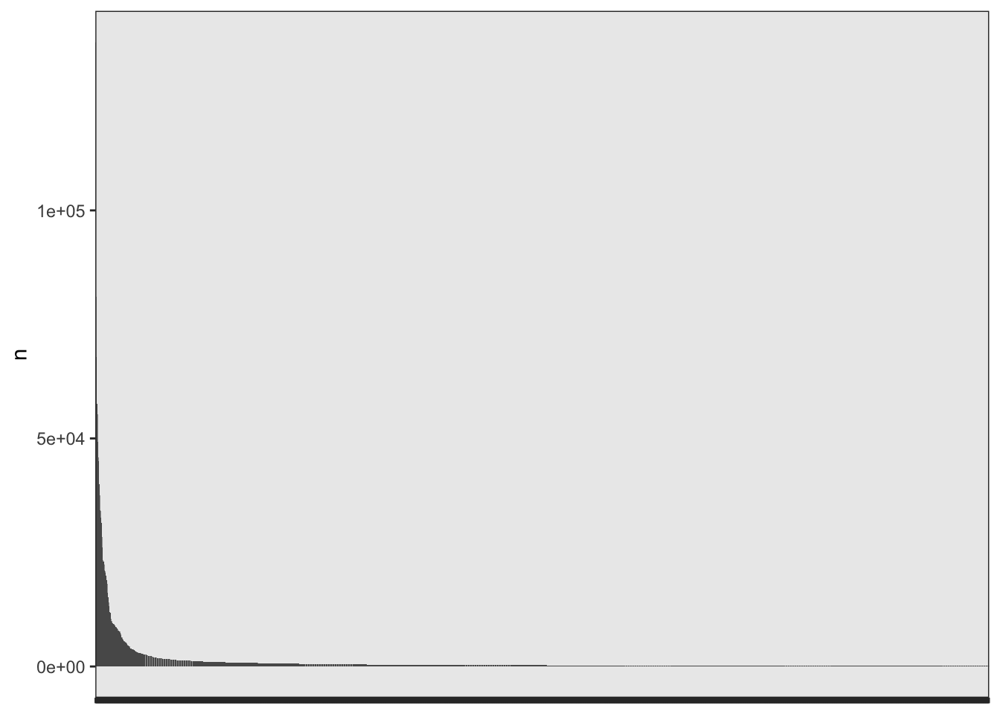

library(tidyverse)
library(tidytext)
library(stylo)
library(seetrees)
theme_set(theme_bw())02_corpus_preparation
load pckg
load raw data
Load raw txt files downloaded from Gallica
fh <- list.files(path = "../corpus_raw/",
full.names = T,
pattern = "\\.txt")
corpus <- tibble(
path = fh,
text = sapply(path, read_file)
) %>%
mutate(path = str_replace_all(path, "é", "e"),
path = str_replace_all(path, "é", "e"))
str(corpus)tibble [192 × 2] (S3: tbl_df/tbl/data.frame)
$ path: chr [1:192] "../corpus_raw//Bancal des Issarts_1.txt" "../corpus_raw//Bancal des Issarts_2.txt" "../corpus_raw//Bancal des Issarts_3.txt" "../corpus_raw//Bancal des Issarts_4.txt" ...
$ text: Named chr [1:192] "Rappel de votre demande:\n\nFormat de téléchargement: : Texte\n\nVues 1 à 57 sur 57\n\nNombre de pages: 57\n\nN"| __truncated__ "Rappel de votre demande:\n\nFormat de téléchargement: : Texte\n\nVues 1 à 52 sur 52\n\nNombre de pages: 52\n\nN"| __truncated__ "Rappel de votre demande:\n\nFormat de téléchargement: : Texte\n\nVues 1 à 28 sur 28\n\nNombre de pages: 28\n\nN"| __truncated__ "Rappel de votre demande:\n\nFormat de téléchargement: : Texte\n\nVues 1 à 16 sur 16\n\nNombre de pages: 16\n\nN"| __truncated__ ...
..- attr(*, "names")= chr [1:192] "../corpus_raw//Bancal des Issarts_1.txt" "../corpus_raw//Bancal des Issarts_2.txt" "../corpus_raw//Bancal des Issarts_3.txt" "../corpus_raw//Bancal des Issarts_4.txt" ...Load metadata
meta <- read.delim("../metadata/metadata_selected.tsv", sep = "\t") %>%
select(-X)
glimpse(meta)Rows: 434
Columns: 16
$ id <int> 1, 2, 3, 4, 5, 9, 10, 14, 16, 17, 18, 19, 20, 21,…
$ link_bnf <chr> "http://catalogue.bnf.fr/ark:/12148/cb37236775k",…
$ link_gallica <chr> "https://gallica.bnf.fr/ark:/12148/bpt6k42803h", …
$ author_short <chr> "Bancal des Issarts", "Bancal des Issarts", "Banc…
$ selected_for_galerie <chr> "yes", "yes", "", "", "", "", "", "yes", "", "yes…
$ title <chr> "Opinion sur le divorce, prononcée au Conseil des…
$ date <chr> "1797", "1792", "1792", "1793-1794", "1798", "179…
$ format <chr> "57p___1 microfiche ; 105*148 mm", "52p___1 micro…
$ author <chr> "Bancal Desissarts, Jean-Henri (1750-1826). Auteu…
$ contributors <chr> "", "", "France. Convention nationale. Éditeur sc…
$ editors <chr> "Micro Graphix", "Hachette (Paris)", "Impr. natio…
$ description <chr> "Collection : Les archives de la Révolution franç…
$ subject <chr> "Divorce -- Droit -- France", "", "", "", "", "",…
$ notes <chr> "", "", "", "", "", "", "", "", "", "", "", "doub…
$ title_short <chr> "Opinion sur le divorce, prononcée au", "Du nouve…
$ filename <chr> "../corpus_raw/Bancal des Issarts_1.txt", "../cor…meta_target <- read.delim("../metadata/metadata_target.tsv", sep = "\t")
glimpse(meta_target)Rows: 9
Columns: 16
$ id <chr> "G1785_0", "G1785_1", "G1785_2", "G1785_3", "G178…
$ link_bnf <lgl> NA, NA, NA, NA, NA, NA, NA, NA, NA
$ link_gallica <lgl> NA, NA, NA, NA, NA, NA, NA, NA, NA
$ author_short <chr> "G1785_0", "G1785_1", "G1785_2", "G1785_3", "G178…
$ selected_for_galerie <lgl> NA, NA, NA, NA, NA, NA, NA, NA, NA
$ title <chr> "Préface", "Tableau général de la littérature", "…
$ date <int> 1785, 1785, 1785, 1785, 1785, 1787, 1787, 1787, 1…
$ format <lgl> NA, NA, NA, NA, NA, NA, NA, NA, NA
$ author <lgl> NA, NA, NA, NA, NA, NA, NA, NA, NA
$ contributors <lgl> NA, NA, NA, NA, NA, NA, NA, NA, NA
$ editors <lgl> NA, NA, NA, NA, NA, NA, NA, NA, NA
$ description <lgl> NA, NA, NA, NA, NA, NA, NA, NA, NA
$ subject <lgl> NA, NA, NA, NA, NA, NA, NA, NA, NA
$ notes <lgl> NA, NA, NA, NA, NA, NA, NA, NA, NA
$ title_short <lgl> NA, NA, NA, NA, NA, NA, NA, NA, NA
$ filename <chr> "../corpus_raw/G1785_0_Préface.txt", "../corpus_r…# join target & ref metadata
meta <- rbind(meta, meta_target)
# join corpus with metadata
corpus_m <- meta %>%
mutate(path = str_replace(filename, "corpus_raw/", "corpus_raw//")) %>%
#filename mistakes
mutate(path = str_replace_all(path, "é", "e"),
path = str_replace_all(path, "é", "e")) %>%
left_join(corpus, by = "path")
str(corpus_m)'data.frame': 443 obs. of 18 variables:
$ id : chr "1" "2" "3" "4" ...
$ link_bnf : chr "http://catalogue.bnf.fr/ark:/12148/cb37236775k" "http://catalogue.bnf.fr/ark:/12148/cb346933758" "http://catalogue.bnf.fr/ark:/12148/cb30051725x" "http://catalogue.bnf.fr/ark:/12148/cb300517148" ...
$ link_gallica : chr "https://gallica.bnf.fr/ark:/12148/bpt6k42803h" "https://gallica.bnf.fr/ark:/12148/bpt6k85298x" "https://gallica.bnf.fr/ark:/12148/bpt6k42324856" "https://gallica.bnf.fr/ark:/12148/bpt6k853041" ...
$ author_short : chr "Bancal des Issarts" "Bancal des Issarts" "Bancal des Issarts" "Bancal des Issarts" ...
$ selected_for_galerie: chr "yes" "yes" "" "" ...
$ title : chr "Opinion sur le divorce, prononcée au Conseil des Cinq-cents, le 12 pluviôse an 5 ([Reprod.]) par Jean-Henry Bancal,..." "Du nouvel ordre social ([Reprod.]) par Henry Bancal,..." "Convention nationale. Discours et projet de décret sur l'éducation nationale, prononcés à la Convention nationa"| __truncated__ "Henri Bancal, député à la Convention, à Anacharsis Clootz, son collègue" ...
$ date : chr "1797" "1792" "1792" "1793-1794" ...
$ format : chr "57p___1 microfiche ; 105*148 mm" "52p___1 microfiche acétate de 98 images, diazoïque ; 105 * 148 mm" "In-8° , 28 p." "16 p. ; in-8" ...
$ author : chr "Bancal Desissarts, Jean-Henri (1750-1826). Auteur du texte" "Bancal Desissarts, Jean-Henri (1750-1826). Auteur du texte" "Bancal Desissarts, Jean-Henri (1750-1826). Auteur du texte" "Bancal Desissarts, Jean-Henri (1750-1826). Auteur du texte" ...
$ contributors : chr "" "" "France. Convention nationale. Éditeur scientifique" "" ...
$ editors : chr "Micro Graphix" "Hachette (Paris)" "Impr. nationale (Paris)" "Impr. du Cercle social (Paris)" ...
$ description : chr "Collection : Les archives de la Révolution française ; 9.4.338" "" "" "" ...
$ subject : chr "Divorce -- Droit -- France" "" "" "" ...
$ notes : chr "" "" "" "" ...
$ title_short : chr "Opinion sur le divorce, prononcée au" "Du nouvel ordre social ([Reprod.]) par" "Convention nationale. Discours et projet de" "Henri Bancal, député à la Convention," ...
$ filename : chr "../corpus_raw/Bancal des Issarts_1.txt" "../corpus_raw/Bancal des Issarts_2.txt" "../corpus_raw/Bancal des Issarts_3.txt" "../corpus_raw/Bancal des Issarts_4.txt" ...
$ path : chr "../corpus_raw//Bancal des Issarts_1.txt" "../corpus_raw//Bancal des Issarts_2.txt" "../corpus_raw//Bancal des Issarts_3.txt" "../corpus_raw//Bancal des Issarts_4.txt" ...
$ text : Named chr "Rappel de votre demande:\n\nFormat de téléchargement: : Texte\n\nVues 1 à 57 sur 57\n\nNombre de pages: 57\n\nN"| __truncated__ "Rappel de votre demande:\n\nFormat de téléchargement: : Texte\n\nVues 1 à 52 sur 52\n\nNombre de pages: 52\n\nN"| __truncated__ "Rappel de votre demande:\n\nFormat de téléchargement: : Texte\n\nVues 1 à 28 sur 28\n\nNombre de pages: 28\n\nN"| __truncated__ "Rappel de votre demande:\n\nFormat de téléchargement: : Texte\n\nVues 1 à 16 sur 16\n\nNombre de pages: 16\n\nN"| __truncated__ ...
..- attr(*, "names")= chr [1:443] "../corpus_raw//Bancal des Issarts_1.txt" "../corpus_raw//Bancal des Issarts_2.txt" "../corpus_raw//Bancal des Issarts_3.txt" "../corpus_raw//Bancal des Issarts_4.txt" ...Number of documents for each author
corpus_m %>%
filter(!is.na(text)) %>%
count(author_short, sort = T) %>% head() author_short n
1 Baudeau 25
2 Bergasse 18
3 Clavière 17
4 Mercier 8
5 Condorcet 7
6 Barère 6headers cleaning
t <- corpus_m %>%
filter(!is.na(text)) %>%
# headers cleaning
# remove all new lines as it's not easy to manipulate with sep strings
mutate(text_cln = str_replace_all(text, "\\n\\n|\\n", " "),
text_cln = str_replace_all(text_cln, "\\r\\n", " "),
# remove everything before % and first separator ----
text_cln = str_remove_all(text_cln, "^.*?%\\.\\s?----------"),
# replace ' with space for cleaner tokenization (qu'il => qu il )
text_cln = str_replace_all(text_cln, "'", " "),
text_cln = str_replace_all(text_cln , "’", " ")) %>%
# OCR accuracy extraction
mutate(ocr_acc = str_extract(text, "Le taux de reconnaissance estimé pour ce document est de \\d+%"),
ocr_acc = str_extract(ocr_acc, "est de \\d+%"),
ocr_acc = str_remove_all(ocr_acc, "est de |%")) %>%
# add sth for the added manually texts (Epremesnil & Talleyrand), otherwise NA will be removed with filter
mutate(ocr_acc = ifelse(is.na(ocr_acc), 1, ocr_acc))
# leave only existing texts (OCR is 0 for no OCR)
corpus_texts <- t %>%
filter(ocr_acc != "0")corpus overview
Number of text for each author
corpus_texts %>%
count(author_short, sort = T) author_short n
1 Bergasse 15
2 Baudeau 11
3 Clavière 10
4 Mercier 7
5 Desmoulins 6
6 Eprémesnil 6
7 Barère 5
8 Manuel 5
9 Pétion 4
10 Silléry (Genlis Ch) 4
11 Talleyrand 4
12 Bancal des Issarts 3
13 Bonneville 3
14 Danton 3
15 Dusaulx 3
16 Fauchet 3
17 Gouges 3
18 Laclos 3
19 Lacretelle 3
20 Mirabeau 3
21 Mme Genlis 3
22 Pastoret 3
23 Brissot 2
24 Carra 2
25 Condorcet 2
26 D'Alembert 2
27 Delisle de Sales 2
28 Dupaty 2
29 Garat 2
30 Sabatier de Castres 2
31 Sieyès 2
32 Ducrest 1
33 G1785_0 1
34 G1785_1 1
35 G1785_2 1
36 G1785_3 1
37 G1785_4 1
38 G1787_5 1
39 G1787_6 1
40 G1787_7 1
41 G1787_8 1
42 La Platière 1
43 La Salle 1
44 Marat 1
45 Rabaut Saint-Étienne 1
46 Target 1tokenization
Count number of tokens
corpus_tokenized <- corpus_texts %>%
unnest_tokens(input = text_cln, output = word, token = "words")
corpus_tokenized %>%
count(author_short, sort = T) %>% tail(20) author_short n
27 Marat 30066
28 Rabaut Saint-Étienne 28485
29 Mme Genlis 28342
30 Bancal des Issarts 25183
31 Fauchet 23275
32 Gouges 17347
33 La Salle 16508
34 G1785_1 14951
35 Silléry (Genlis Ch) 13129
36 Condorcet 12989
37 G1787_7 12306
38 G1787_5 11926
39 G1787_6 11741
40 G1785_3 9208
41 G1787_8 8836
42 G1785_0 8395
43 G1785_2 7103
44 Eprémesnil 6205
45 G1785_4 4054
46 La Platière 954Target texts sizes
corpus_tokenized %>%
count(author_short, sort = F) %>%
filter(str_detect(author_short, "G17")) author_short n
1 G1785_0 8395
2 G1785_1 14951
3 G1785_2 7103
4 G1785_3 9208
5 G1785_4 4054
6 G1787_5 11926
7 G1787_6 11741
8 G1787_7 12306
9 G1787_8 8836features cln
MFW in the corpus
mfw <- corpus_tokenized %>%
group_by(word) %>%
count(sort = T) %>%
head(2000)
mfw # just a look at the table and the curve# A tibble: 2,000 × 2
# Groups: word [2,000]
word n
<chr> <int>
1 de 136904
2 la 80999
3 les 67821
4 le 57629
5 l 55286
6 à 49281
7 des 45837
8 que 45093
9 il 39968
10 d 37451
# ℹ 1,990 more rowsmfw %>%
ggplot(aes(x = reorder(word, -n), y = n)) +
geom_col() +
theme(axis.text.x = element_blank(),
axis.title.x = element_blank())
MFW 1000
x <- mfw %>% pull(word)
#x[1000:2000]
x[1:100] [1] "de" "la" "les" "le" "l" "à"
[7] "des" "que" "il" "d" "et" "qui"
[13] "en" "qu" "un" "dans" "a" "ne"
[19] "du" "est" "une" "pour" "n" "on"
[25] "plus" "ce" "par" "s" "pas" "au"
[31] "je" "c" "nous" "vous" "se" "m"
[37] "y" "cette" "ou" "ces" "ils" "sur"
[43] "mais" "elle" "lui" "leur" "j" "tout"
[49] "avec" "même" "son" "aux" "tous" "ses"
[55] "t" "si" "être" "comme" "i" "ont"
[61] "e" "bien" "sa" "dont" "fait" "leurs"
[67] "1" "sont" "faire" "peut" "où" "sans"
[73] "point" "me" "eft" "encore" "toutes" "étoit"
[79] "avoir" "deux" "été" "nos" "font" "moins"
[85] "hommes" "homme" "avoit" "autres" "ai" "ceux"
[91] "cet" "donc" "autre" "toujours" "faut" "peuple"
[97] "r" "p" "fur" "elles" Cleaning based on the 2000 MFW
# vector of errors from 1000 MFW
errors <- unlist(strsplit(
c("i e r sc p ii v o u z h g re in b k iii iv x i liv ï st é q tion eh pro ut vi ks fl ré sor er ah ie ft w mi î nt xiv di 8c 6c ion ôcq mr it do ï iv tt ea î pa us w iii net tems hui fol x li ôc mm ark ia gré er cc vol co da entr ki tome ja xvi pag ad no ns po ue of col ex ri im at em ix ô ju ti tre the if vo to ot ar ur oc mo ë ies al mt oit res ç http is ke catalogue.bnf.fr id ij vii supplicei e r sc p ii v o u z h g re in b k iii iv x i liv ï st é q tion eh pro ut vi ks fl ré sor er ah ie ft w mi î nt xiv di 8c 6c п ion ôcq mr it do ï é iv tt ea î pa us w iii net font fous"),
" " )
)
corpus_tokenized <- corpus_tokenized %>%
# remove digits
filter(!str_detect(word, "\\d+")) %>%
# remove noisy characters
filter(!word %in% errors) %>%
# long s replacements
mutate(word = str_replace(word, "^f$", "s"),
word = str_replace(word, "^fe$", "se"),
word = str_replace(word, "^fa$", "sa"),
word = str_replace(word, "^eft$", "est"),
word = str_replace(word, "^efl$", "est"),
word = str_replace(word, "^dé$", "de"),
word = str_replace(word, "^fon$", "son"),
word = str_replace(word, "^fes$", "ses"),
word = str_replace(word, "^fi$", "si"),
word = str_replace(word, "^ame$", "âme"),
word = str_replace(word, "^lés$", "les"),
word = str_replace(word, "^lé$", "le"),
word = str_replace(word, "^ainfi$", "ainsi"),
word = str_replace(word, "^efprit$", "esprit"),
word = str_replace(word, "^fans$", "sans"),
word = str_replace(word, "^efi$", "est"),
word = str_replace(word, "^eff$", "est"),
word = str_replace(word, "^fu$", "su"),
word = str_replace(word, "^lés$", "les"),
word = str_replace(word, "^foin$", "soin"),
word = str_replace(word, "^chofes$", "choses"),
word = str_replace(word, "^chofe$", "chose"),
word = str_replace(word, "^prefque$", "presque"),
word = str_replace(word, "^ufage$", "usage"),
word = str_replace(word, "^caufe$", "cause"),
word = str_replace(word, "^fera$", "sera"),
word = str_replace(word, "^fur$", "sur"),
word = str_replace(word, "^fang$", "sang"),
word = str_replace(word, "^hiftoire$", "histoire"),
word = str_replace(word, "^fage$", "sage"),
word = str_replace(word, "^foient$", "soient"),
word = str_replace(word, "^feule$", "seule"))
# proper names to remove (?)
# rousseau izerben kornmann mesmer mefmer orléans montagne beaumarchais descartesFast check MFW
corpus_tokenized %>%
group_by(word) %>%
count(word, sort = T) %>% head(10)# A tibble: 10 × 2
# Groups: word [10]
word n
<chr> <int>
1 de 137732
2 la 80999
3 les 68015
4 le 57883
5 l 55286
6 à 49281
7 des 45837
8 que 45093
9 il 39968
10 d 37451corpus_tokenized %>%
group_by(word) %>%
count(word, sort = T) %>% head(100) %>% pull(word) [1] "de" "la" "les" "le" "l" "à"
[7] "des" "que" "il" "d" "et" "qui"
[13] "en" "qu" "un" "est" "dans" "a"
[19] "ne" "du" "une" "pour" "n" "on"
[25] "plus" "ce" "par" "s" "pas" "au"
[31] "se" "je" "sur" "c" "nous" "vous"
[37] "son" "m" "y" "cette" "ses" "ou"
[43] "ces" "ils" "si" "mais" "elle" "lui"
[49] "leur" "j" "sa" "tout" "avec" "même"
[55] "aux" "tous" "t" "être" "comme" "ont"
[61] "sans" "bien" "dont" "fait" "leurs" "sont"
[67] "faire" "peut" "où" "point" "me" "encore"
[73] "toutes" "étoit" "avoir" "deux" "été" "nos"
[79] "moins" "hommes" "homme" "avoit" "autres" "ai"
[85] "ceux" "cet" "donc" "autre" "toujours" "faut"
[91] "peuple" "elles" "liberté" "contre" "doit" "toute"
[97] "notre" "grand" "ni" "dit" save
glimpse(corpus_tokenized)Rows: 2,901,987
Columns: 20
$ id <chr> "1", "1", "1", "1", "1", "1", "1", "1", "1", "1",…
$ link_bnf <chr> "http://catalogue.bnf.fr/ark:/12148/cb37236775k",…
$ link_gallica <chr> "https://gallica.bnf.fr/ark:/12148/bpt6k42803h", …
$ author_short <chr> "Bancal des Issarts", "Bancal des Issarts", "Banc…
$ selected_for_galerie <chr> "yes", "yes", "yes", "yes", "yes", "yes", "yes", …
$ title <chr> "Opinion sur le divorce, prononcée au Conseil des…
$ date <chr> "1797", "1797", "1797", "1797", "1797", "1797", "…
$ format <chr> "57p___1 microfiche ; 105*148 mm", "57p___1 micro…
$ author <chr> "Bancal Desissarts, Jean-Henri (1750-1826). Auteu…
$ contributors <chr> "", "", "", "", "", "", "", "", "", "", "", "", "…
$ editors <chr> "Micro Graphix", "Micro Graphix", "Micro Graphix"…
$ description <chr> "Collection : Les archives de la Révolution franç…
$ subject <chr> "Divorce -- Droit -- France", "Divorce -- Droit -…
$ notes <chr> "", "", "", "", "", "", "", "", "", "", "", "", "…
$ title_short <chr> "Opinion sur le divorce, prononcée au", "Opinion …
$ filename <chr> "../corpus_raw/Bancal des Issarts_1.txt", "../cor…
$ path <chr> "../corpus_raw//Bancal des Issarts_1.txt", "../co…
$ text <chr> "Rappel de votre demande:\n\nFormat de télécharge…
$ ocr_acc <chr> "94", "94", "94", "94", "94", "94", "94", "94", "…
$ word <chr> "microcopy", "resotution", "test", "chart", "nbs"…corpus_tokenized %>%
count(author_short, sort = T) author_short n
1 Baudeau 325247
2 Mercier 233148
3 Bergasse 220122
4 Danton 193382
5 Dusaulx 186027
6 Sabatier de Castres 140730
7 Barère 113645
8 Clavière 103202
9 D'Alembert 92850
10 Bonneville 88185
11 Lacretelle 87104
12 Carra 84919
13 Manuel 82187
14 Delisle de Sales 68854
15 Dupaty 68485
16 Ducrest 67193
17 Mirabeau 55538
18 Pétion 50763
19 Pastoret 50463
20 Garat 48693
21 Desmoulins 47160
22 Laclos 44625
23 Target 44483
24 Brissot 43161
25 Sieyès 42714
26 Talleyrand 36734
27 Marat 29652
28 Mme Genlis 27570
29 Rabaut Saint-Étienne 26624
30 Bancal des Issarts 24455
31 Fauchet 22813
32 Gouges 17063
33 La Salle 16210
34 G1785_1 14447
35 Silléry (Genlis Ch) 12750
36 Condorcet 12729
37 G1787_7 11891
38 G1787_5 11616
39 G1787_6 11392
40 G1785_3 8935
41 G1787_8 8558
42 G1785_0 8112
43 G1785_2 6830
44 Eprémesnil 5874
45 G1785_4 3950
46 La Platière 902corpus_tokenized %>%
count(author_short) %>%
filter(str_detect(author_short, "G17")) author_short n
1 G1785_0 8112
2 G1785_1 14447
3 G1785_2 6830
4 G1785_3 8935
5 G1785_4 3950
6 G1787_5 11616
7 G1787_6 11392
8 G1787_7 11891
9 G1787_8 8558corpus_joined <- corpus_tokenized %>%
group_by(path) %>%
mutate(text = paste(word, collapse = " ")) %>%
select(-word) %>%
distinct() %>%
# create new path
mutate(path = str_replace(path, "corpus_raw", "corpus_cln"))head(corpus_joined)# A tibble: 6 × 19
# Groups: path [6]
id link_bnf link_gallica author_short selected_for_galerie title date
<chr> <chr> <chr> <chr> <chr> <chr> <chr>
1 1 http://catal… https://gal… Bancal des … "yes" Opin… 1797
2 3 http://catal… https://gal… Bancal des … "" Conv… 1792
3 5 http://catal… https://gal… Bancal des … "" Des … 1798
4 9 http://catal… https://gal… Barère "" Rapp… 1794…
5 10 http://catal… https://gal… Barère "" Obse… 1789
6 14 http://catal… https://gal… Barère "yes" Mont… 1796…
# ℹ 12 more variables: format <chr>, author <chr>, contributors <chr>,
# editors <chr>, description <chr>, subject <chr>, notes <chr>,
# title_short <chr>, filename <chr>, path <chr>, text <chr>, ocr_acc <chr>Write cleaned files to a folder
fh <- corpus_joined$path
texts <- corpus_joined$text
for (i in 1:length(fh)) {
write_file(texts[i], file = fh[i])
}